News
On festival days like Govardhan Puja and Gopastami the cows are fed sumptously and decoarated with garlands and dyes made from natural minerals.
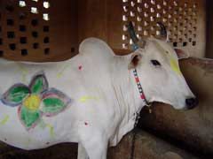
Maharani being prepared for worship
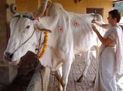
Syam being pampered by an admirer
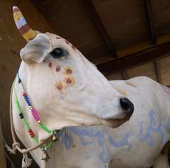
Maharani with her horns painted
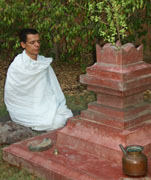
Under the direction of Nepali born Yogacarya Dilliraj Ghimire, 37, who is certified by the Go-Vigyana Research Center in Nagpur, Maharastra, Care for Cows has started producing garden insect repellents, air-purifying incense, medicines, and hygienic body ointments including massage oil, tooth powder, and shampoo from the by-products of the cow. Part of the procedure for making garden insect repellent is boiling cow urine and neem leaves in a copper vessel on a fire fueled with dried cow dung. The concentrate is then diluted and sprayed on insect infested vegetables and plants including Tulasi. This product is very effective in repelling a large variety of insects but does not kill them. A different variety of this solution is effective for ridding the soil of underground insects that feed on the roots of vegetables.
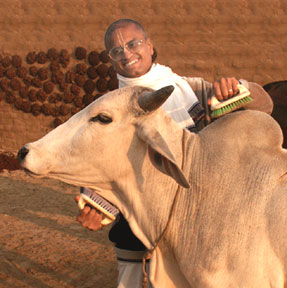
One of the most common activities performed at Care for Cows is grooming. Of all the activities that are dear to cows, eating is the most popular but grooming runs a close second. We often observe that if cows are groomed at feeding time, they often stop eating in order to relish firm brushing or scratching. So daily, the cowherdmen and guests groom as many members of the herd as possible. Most cows like human attention and affection.
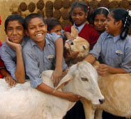
They especially like being cuddled by children. Guests who frequent Care for Cows are provided with brushes and when they enter the barnyard, the residents often crowd around them competing for attention.
One of the preferred activities of the Care for Cows residents is sunbathing. The more experienced residents set the example and the less experienced observe and inquire how to improve. Periodically the residents have contests and award prizes for the best performers in three categories: Novice, Intermediate and Adept. Contestants are placed in the respective categories strictly according to individual expertise. No consideration is given to sex, age, family line or tenure in the movement. Awards are offered to encourage each participant to slowly but surely attain the adept stage. The characteristics indicative of the Novice category are: half-closed eyes, deep breathing, and a general disinterest in the surroundings.
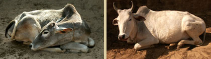
Shanti and Yasoda were commended for good performance in this category.
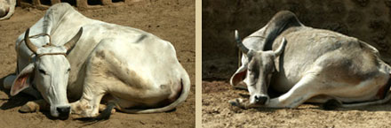
Vanamali and Pooja are under consideration for promotion to the Intermediate level.
The characteristics indicative of the Intermediate level surpass those of the Novice level and include: fully closed eyes, a minimum of two appendages fully extended, extended periods with no movement, and other-worldliness.
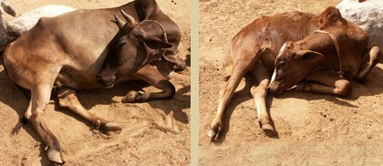
Posted in
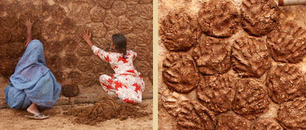
One of the wonderful things about cow dung (gober) is that it can be dried and used as fuel for cooking. Cows eat a variety of leaves, grass, wheat stalks, grains, and so on, and chew everything thoroughly hence, their gober is composed of many combustible fibers. An adult cow passes on the average of thirteen times a day so there is always ample gober to harvest in any barn. The cowherd men and women knead the gober into melon-size balls and stick them on the wall to dry in the sun. In good weather they dry in 3-4 days and are then collected and stored near the kitchen to provide fuel for cooking.
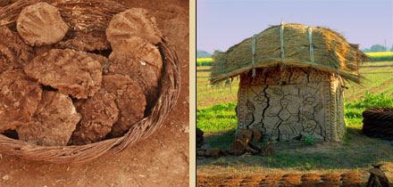
In the villages of India it is common to find dried cow-dung patties (khande) stacked in a variety of ways and plastered with a layer of gober in which designs are drawn while still wet. These small storehouses of gober supply the villagers with fuel during the monsoon and winter seasons when the sun is weak and cannot dry fresh gober effectively. Anyone who has eaten chapaties (flat bread) cooked on a gober fire can testify how this fuel enhances their taste.
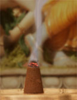
Obtain one kilo of the following items and grind into a fine powder:
1. Nagarmutha
2. Ral
3. Lal chandan
4. Jatamachi
5. Kapoor kajuri
6. Ghee Proceedure:
Mix the 5 powders together Sprinkle and mix in the ghee thoroughly Blend in three kilos of fresh gober and again mix thoroughly. Keep the mixture in a covered pot so that it stays moist. It should be wet enough so that it stays together when pressed into cones or dhoop sticks. Then dry them in the sun. We made some 2-foot frames out of half inch angle with screen and lay the moist cylinders on them and plance the screens in the sun. They dry in two days of good sun.
The incense offers a clean earthy and sancified aroma akin to Tibetin incense. All of the ingredients are said to produce oxygyn while burning.
Packets of 14 sticks are available for $4.00 each. Click here to order
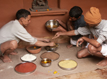
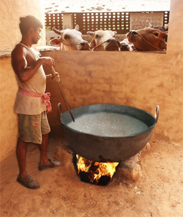
Every afternoon the cowherd men prepare a 200-liter pot of porridge for the residents of Care for Cows. The porridge consists of cracked wheat, chick pea husks, barley flour and salt cooked on a cow dung fire. During the winter months sugar cane molasses is added to help the herd ward off the cold. Serving the porridge has become the highlight of the day. Here you can see how the oxen watch with great anticipation, knowing they will get their share in the morning.
Until they know you, bulls generally show the side of themselves that is grave, aloof and even intimidating. Yet they have another side which is warm, friendly and even frivolous. During the interim between the monsoon and fall, when the days are hot and humid, the bulls decided to exercise their lighter side and inaugurate the first smiling competition. They hoped it would distract them from the discomfort of the season and help the days preceding Kartika pass quickly.
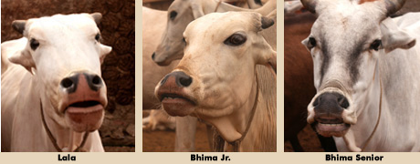
Lala, Bhima’s Junior and Senior began by curling their noses and encouraged the others to participate.
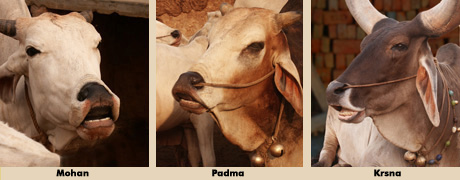
When Krsna showed his teeth, Padma and Mohan followed and the fever spread to the others.
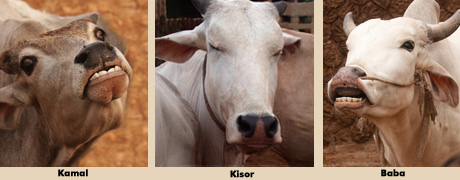
Kamal and Baba brought the competition to a more humorous level while Kisor’s unique offering inspired approval and admiration.
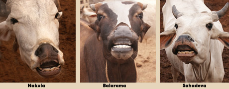
Nakula, Balarama, and Sahadeva brought the competition to its peak. In this way the bulls accomplished their two goals and agreed to make this activity regular function at Care for Cows.
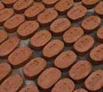
Care for Cows soap is made with cow dung, multani mitthi (a clay like Fuller’s Earth), gehru powder (red clay), sesame oil, Neem extract, and camphor. This combination offers an organic, gentle cleansing, moisturizing, antiseptic soap.